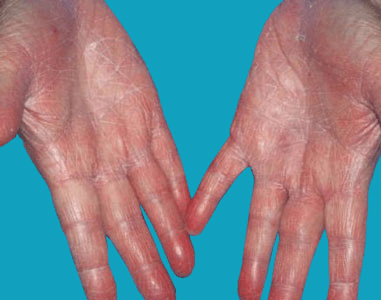
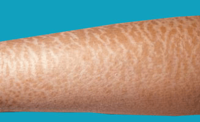

Dry skin (xerosis) is a condition of rough, dry skin with fine scaling of skin
and, occasionally, with small cracks in the skin. Dry skin is also known as winter
itch or asteatosis.
Often itchy, dry skin is caused by environmental factors, such as cold weather and
frequent bathing, and by medical conditions, such as atopic dermatitis and malnutrition.
Dry skin develops due to a decrease in the natural oils in the outer layer of skin,
which makes the skin lose water.

